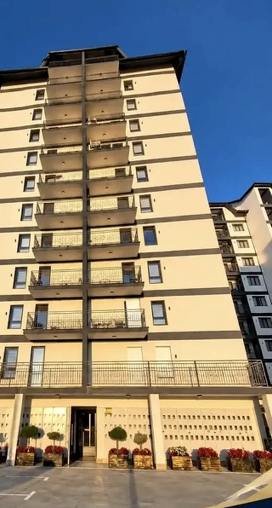
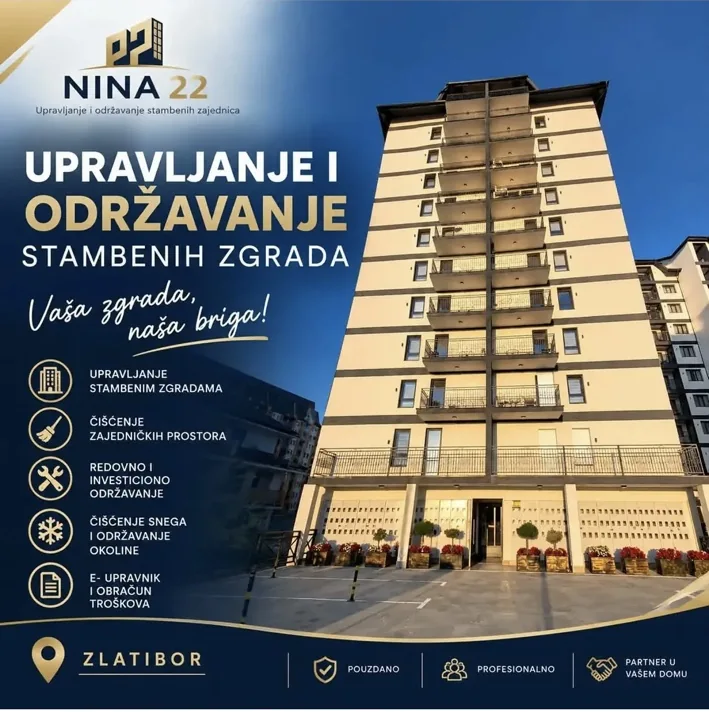
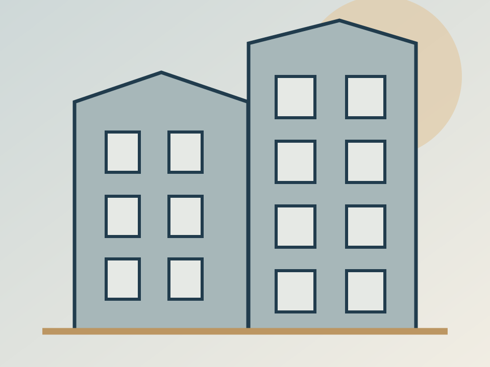

Vaša zgrada.Naša briga.
Upravljanje, održavanje i svakodnevna briga o stambenim zajednicama na Zlatiboru. Jedno mesto za pitanja, dogovore i organizaciju poslova.

Jedan kontakt
Za komunikaciju i organizaciju poslova
Jasni troškovi
Preglednost u radu stambene zajednice
Briga o prostoru
Od održavanja do organizacije intervencija
Za zgradu koja funkcioniše. Za stanare koji imaju odgovor.
Od redovnih obaveza do neplaniranih situacija – usluge na jednom mestu. Konačan opis i obim poslova potvrđuje NINA 22 pre javne objave.
Manje administracije. Više reda u zgradi.
NINA 22 u svom predstavljanju ističe dostupnu komunikaciju, pregled troškova i organizaciju radova.
Rezultati se vide u svakodnevnim detaljima.
Pogledajte dostavljeni snimak čišćenja zajedničkih prostora. Originalne fotografije objekata dodajemo kada ih Marina dostavi.
Mašinsko čišćenje hodnika
Primer održavanja zajedničkih površina iz video-materijala NINA 22.


Dubinsko čišćenje nameštaja
Uz primarnu delatnost, Marina nudi i dubinsko čišćenje nameštaja. Uskoro dodajemo originalne fotografije, video-snimak rada i konkretan opis usluge.
- Zaseban upit za ovu uslugu
- Fotografije i video u pripremi
- Ponuda prema potrebama klijenta
Briga o objektu počinje dobrom komunikacijom.
NINA 22 je agencija za profesionalno upravljanje i održavanje stambenih zajednica na Zlatiboru. Kontakt osoba predstavljena u dostavljenom promotivnom materijalu je Marina Ponjavić, profesionalni upravnik. Konačnu biografiju i fotografiju dodaćemo nakon odobrenja.
Hajde da razgovaramo o vašoj zgradi.
Pošaljite osnovne informacije i odaberite uslugu. U ovoj demo verziji obrazac priprema email poruku, bez slanja podataka na server.
Zlatibor, Srbija